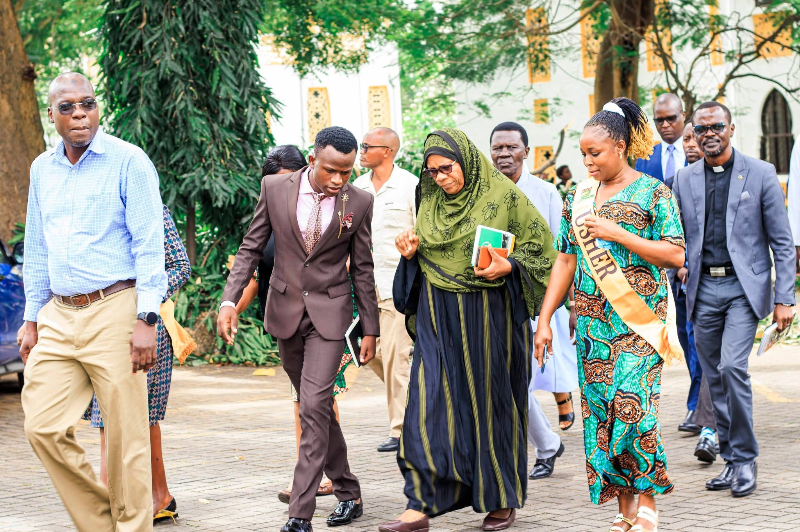
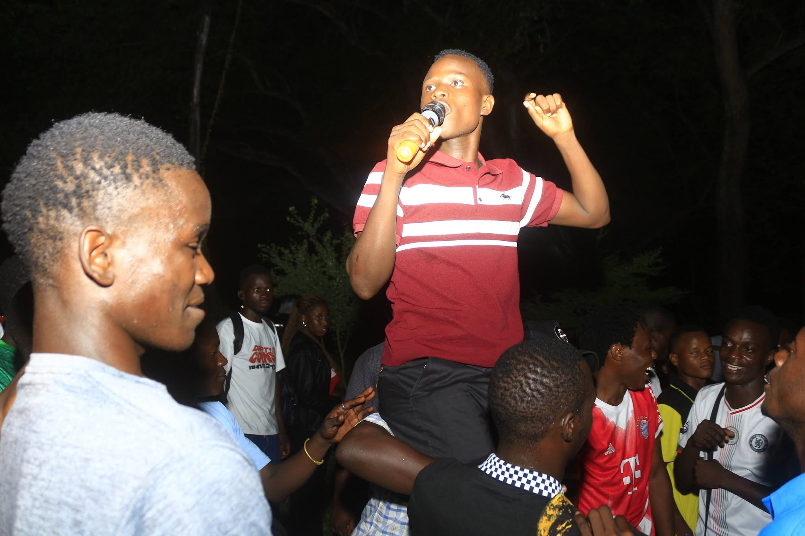
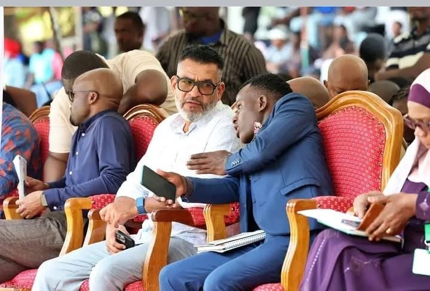

Our Executive Director took the stage in front of the President and thousands of Kenyans at the historic Shanzu rally. In a powerful speech, they outlined the Y-TV movement's commitment to uniting the youth across all 47 counties and driving the Vision 2060 agenda forward.
"The youth are not just the leaders of tomorrow; we are the partners of today. Y-TV is here to ensure that every young Kenyan has a seat at the table," the Director stated.

The core leadership team met in Nairobi to finalize the 2027 county expansion roadmap and budget allocation.

Y-TV representatives met with local innovation hubs to discuss free digital skills training for 10,000 youths.

Youth leaders from Mombasa and Kilifi counties gathered to discuss community action plans for the upcoming quarter.